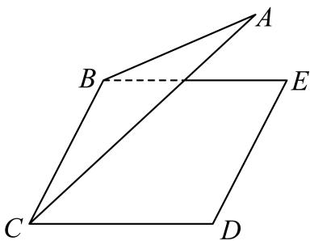
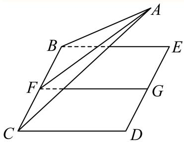
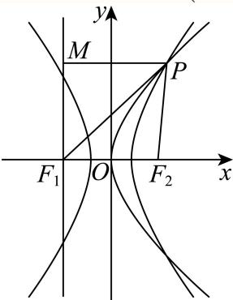
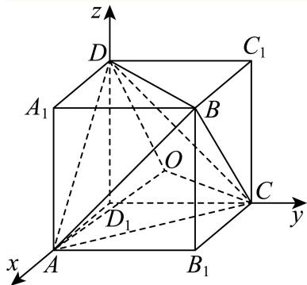
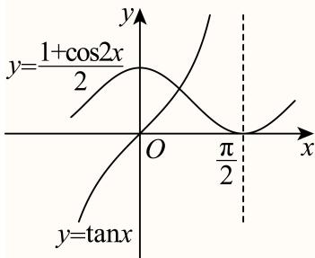
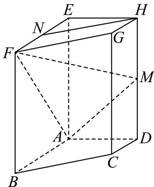
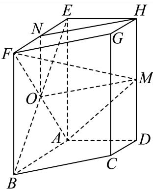
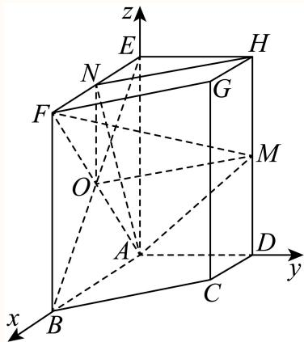
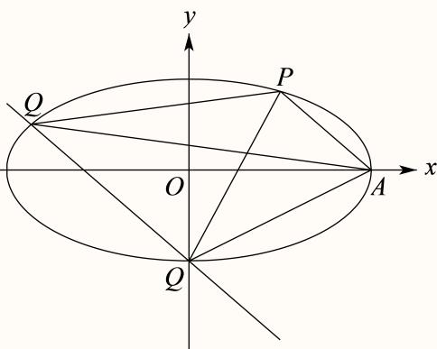
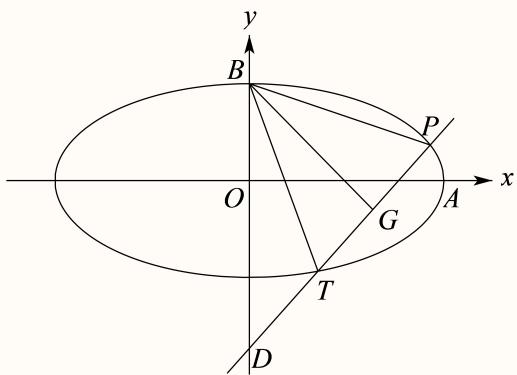

01 【来源：虹口25一模·1】
查看所属专题已知集合 ，，则 ______。
答案与解析
答案
解析
由 、，得 。
整卷阅读 · 教师版 · 21 题
按来源题号排列；内容来自分类汇编，仍需回源核对。
没有找到匹配题目。
已知集合 ，，则 ______。
由 、，得 。
函数 的定义域是______。
对数真数必须为正，即 ，等价于 ，解得 或 。所以定义域为 。
若 ，则 ______。
由二倍角公式，。
在 的二项展开式中， 项的系数为______。
-160
二项展开式通项为 。令 ，得 ，所求系数为 。
设 且 ，则函数 的图像恒过的定点坐标为______。
(1,2)
令 ，则对任意允许的底数 ，均有 。故图象恒过定点 。
若某圆锥的底面半径为 ，高为 ，则该圆锥的侧面积为______。（结果保留 ）
√2π
首先求出母线，再由侧面积公式计算可得.
因为圆锥的底面半径r = 1，高h = 1,设母线为l(l > 0)，则
所以该圆锥的侧面积为
故答案为：
已知非零复数 满足 ，，则 的虚部为______。
-1
设 ，则 ，。相减得 ，代回得 。排除 ，得 。故虚部为 。
已知 则 的解集是______。
[-3,3]
函数为 。令 ，则 等价于 ，得 。所以解集为 。
如图，已知正三角形 和正方形 的边长均为 ，且二面角 的大小为 ，则 ______。

-1
令 分别为 中点，则 ，且 均垂直于 。
二面角的平面角为 ，但向量 与 的夹角为 。
于是

双曲线 的左、右焦点分别为 和 ，若以点 为焦点的抛物线 与 在第一象限交于点 ，且 ，则 的离心率为______。
设双曲线焦点为 。
抛物线焦点为 ，所以 。
由 且 在第一象限，知 。
联立得 ，所以 。
于是 。
双曲线定义给出 ，故 。

2024年10月30日“神舟十九号”载人飞船发射成功，标志着中国空间站建设进入新阶段。在飞船竖直升空过程中，某位记者用照相机在同一位置以同一姿势连续拍照两次。已知“神舟十九号”飞船船体实际长度为 ，且在照片上飞船船体长度为 ，比较两张照片，相对于照片中的同一固定参照物飞船上升了 。假设该记者连按拍照键间的反应时间为 ，并忽略相机曝光时长，若用平均速度估算瞬时速度，则拍照时飞船的瞬时速度为______。（用含有 、、、 的式子表示）
设相邻两次拍照间飞船实际升高 。
由照片与实际高度的比例 ，得 。
在题设短时间近似下，速度为 。
已知项数为 的数列 中任一项均为集合 中的元素，且相邻两项满足 ，。若 中任意两项都不相等，则满足条件的数列 有______个。
13122
先将 任意排列，有 种。
依次插入 ，为满足相邻两项 ，新元素 不能紧接在 的左侧，因此只能插在 左侧、 左侧或整个序列末尾，每次有3种选择。
插入 时，其前项均小于 ，不会破坏条件；反过来删除当前最大元素也不会破坏条件，故此计数不重不漏。于是总数为 。
已知 ，则“”是“”的（ ）条件。
A. 充要
B. 充分非必要
C. 必要非充分
D. 既非充分又非必要
C
在 内， 等价于 或 ，而 等价于 。
后者能推出前者，前者不能推出后者，故为必要非充分条件，选 C。
已知事件 和事件 满足 ，则下列说法正确的是（ ）。
A. 事件 和事件 独立
B. 事件 和事件 互斥
C. 事件 和事件 对立
D. 事件 和事件 互斥
B
交集为空即两事件互斥，故B正确。掷一枚骰子，设A为出现1点、B为出现2点，则两事件互斥但不独立，也不对立；出现3点同时属于两者的补事件，故两个补事件不互斥。故选B。
校订说明：依据本地题干及解析素材，补回D项遗漏的补事件符号；本题暂保留原专题位置。
已知边长为 的正四面体 的内切球（球面与四面体四个面都相切的球）的球心为 ，若空间中的动点 满足 ，，则点 的轨迹所形成的几何体的体积为（ ）。
A.
B.
C.
D.
A
点 的轨迹形成以 为三条邻棱的平行六面体。
将边长2的正四面体嵌入棱长 的正方体，内切球心 是正方体中心。
取坐标 于是 ，，由余弦定理 底面平行四边形面积为 。
平面 的法向量 满足 、，可取 。
又 ，故点 到该平面的距离为 。
所求体积 ，选 A。

设数列 的前四项分别为 ，对于以下两个命题，说法正确的是（ ）。
① 存在等比数列 以及锐角 ，使 成立。
② 对任意等差数列 以及锐角 ，均不能使 成立。
A. ①是真命题，②是真命题
B. ①是真命题，②是假命题
C. ①是假命题，②是真命题
D. ①是假命题，②是假命题
A
① 若 依次成等比数列，则 在 上， 连续严格递增，由0趋向无穷； 连续严格递减，由1趋向0，故两者恰有一个交点，①为真。
② 假设所列四个三角函数值组成一个等差数列的前四项的集合。因为锐角的正切值大于正弦值，该集合至少有两个元素；等差数列的公差为零时集合只有一个元素，公差不为零时有四个不同元素。因此，若四个三角函数值中有重复值，则集合相等不可能成立，下文只需考虑四值互不相同的情形。 时，该集合只有 两个元素，四项等差数列若公差非零有四个不同元素，若公差为零仅一个元素，均不成立。
若这四个值中有重复，则其集合至多有三个元素；又因锐角的正弦值小于1，正切值与余切值不可能同时小于1，故这四个值不可能全部相等。等差数列前四项组成的集合只能有一个或四个元素，所以此时也不成立。以下只需考虑四个值互不相同的情形。
当 时，最小值为 ，最大值为 ，由等差数列首尾和等于中间两项和，必须有 移项并除以非零的 ，得 ，即 。
但两个因子都在 内，矛盾。
当 时，最小值为 ，最大值为 ，同样得到上述矛盾。因此②为真，选 A。

设 。
（1）当函数 的最小正周期为 时，求 在 上的最大值；
（2）若 ，且在 中，角 所对的边长为 ，锐角 满足 ，，求 的最小值。
（1）由 得 ，于是 。
当 时，，故在 取得最大值 。
（2） 时，，且 ，所以 。
由 得 。
余弦定理给出 ，等号当且仅当 时成立。
因此 的最小值为 。
如图，已知在四棱柱 中， 平面 ，、 分别是 、 的中点。

（1）求证： 平面 ；
（2）若底面 为梯形，，，，异面直线 与 所成角为 。求直线 与平面 所成角的正弦值。
证明见解析
（1）连接 交 于 ，连接 。
因为 是平行四边形， 是 中点；又 分别为 中点，所以 ，且 。
于是四边形 是平行四边形，。
平面 ABFE 与平面 AFM 的交线为 AF，而 N 在 EF 上且不在 AF 上，故 N 不在平面 AFM 内。因此 HN 不在平面 AFM 内。
又 平面 ， 平面 ，故 平面 。
（2）由 及异面直线 所成角为 ，得 。
以 为原点， 方向分别为坐标轴，得 ，，。
平面 的法向量满足 ，可取 。
设所求角为 ，则


2024年法国奥运会落下帷幕。某平台为了解观众对本次奥运会的满意度，随机调查了本市1000名观众，得到他们对本届奥运会的满意度评分（满分100分），平台将评分分为 、、、、 共5层，绘制成频率分布直方图（如图1所示）。并在这些评分中以分层抽样的方式从这5层中再抽取了共20名观众的评分，绘制成茎叶图，但由于某种原因茎叶图受到了污损，可见部分信息如图2所示。

图1

图2
（1）求图2中这20名观众的满意度评分的第35百分位数；
（2）若从图2中的20名观众中再任选取3人做深度采访，求其中至少有1名观众的评分大于等于90分的概率；
（3）已知这1000名观众的评分位于 上的均值为67，方差为64.7，位于 上的均值为73，方差为134.6，求这1000名观众的评分位于 上的均值与方差。
68
这1000名观众的评分位于 [80,100]上的均值与方差分别为 87， 17.7.
（1） 为整数，故第35百分位数为第7、8个数据的平均数，即 。
（2）由直方图及分层抽样知，20人中评分在 的有2人。至少抽到其中1人的概率为
（3）评分在 上的频率为 ，在 上的频率为0.3。
设后组均值为 、方差为 。
由整体均值 得 。
由分组方差合成公式 解得 。
故均值为87，方差为17.7。
已知椭圆 的左、右焦点分别为 ，右顶点为 ，上顶点为 ，设 为 上的一点。
（1）当 时，求 的值；
（2）若 点坐标为 ，则在 上是否存在点 使 的面积为 ，若存在，请求出所有满足条件的点 的坐标；若不存在，请说明理由；
（3）已知 点坐标为 ，过点 和点 的直线 与椭圆 交于另一点 ，当直线 与 轴和 轴均不平行时，有 ，求实数 的取值范围。
(2)存在；Q(0,−1)或
（1）由椭圆方程知 。
给出 ，代入椭圆得 。
因此 。
（2），，。
面积条件要求 到 的距离为 。
直线 为 。
设 所在平行线为 ，则 故 或 。
当 时，与椭圆联立得 ，从而 或 。
当 时，联立得 ，判别式为 ，无交点。
因此所求两点恰为上述两点。
（3）设 ，其中 ，交点为 。
联立得 所以 ，。
设 中点为 ，向量条件等价于 ，也即 。
因 ，有 除以非零的 得 ，代入根和、再除以 ，得 结合判别式条件，，得 。
反之此区间内可取 ，满足交点及向量条件，故所求范围为 。


设 ，，。若函数 满足 恒成立，则称函数 具有性质 。
（1）判断 是否具有性质 ，并说明理由；
（2）设 ，若函数 具有性质 ，求实数 的取值范围；
（3）设函数 的定义域为 ，且对任意 以及 ，都有 。若当 时，恒有 。求证：函数 对任意实数 均具有性质 。
具有，理由见解析
证明见解析
（1） 是偶函数，且当 时 ，故对 恒有 。
所以 具有性质 。
（2），所以 在 上严格递减，在 上严格递增。
当 时，整个待考察区间位于非负半轴，性质成立；当 时，，性质不成立。
当 时，右半区间的条件自动成立；左半区间要求 对所有 成立。
由先减后增及左端点不取，等价于 ，即 因此 。
（3）题设等价于：对任意 、， 先证不存在 、 使 。
若存在，令 、。
由（*），向左各相邻长度为 的增量均小于 ，故对正整数 有 取足够大的 ，使 且右侧大于0，这与负半轴上 矛盾。
若存在 、 且 ，令 。
由（*）有 ，所以 ，又与上一段的结论矛盾。
因此对任意 、 恒有 。
对任意实数 ，当 时差商分子分母均正，当 时均负，故恒有 ，即对任意 都具有性质 。